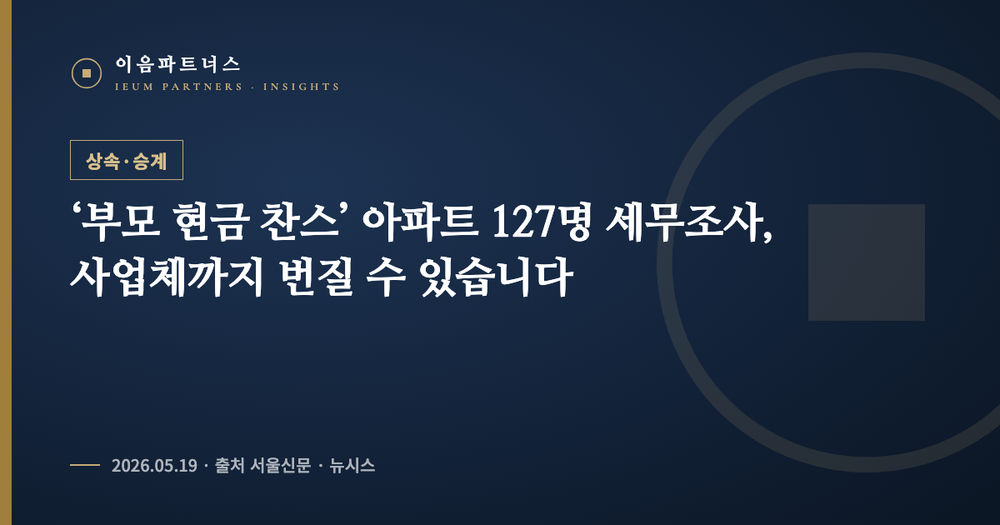

‘부모 현금 찬스’ 아파트 127명 세무조사, 사업체까지 번질 수 있습니다

자녀가 집을 살 때 부모가 돕는 일은 흔합니다. 그런데 국세청은 2026년 5월 19일 대출 없이 고가 아파트를 산 '현금 부자'와 부모 돈을 빌린 것처럼 꾸민 '꼼수 증여' 등 부동산 탈세 혐의자 127명에 대해 세무조사에 착수했다고 밝혔습니다. 이 글에서는 이번 조사의 내용과 자녀의 주택 자금을 도와주려는 대표님이 확인할 점을 정리합니다.
이번 조사가 대표님께 특히 중요한 이유는 자금 출처를 확인하다가 사업소득 누락이나 법인 자금 유출이 의심되면 관련 사업체까지 조사가 넓어지기 때문입니다. 가족에게 돈을 보내거나 빌려줄 계획이 있다면 미리 서류를 갖춰 두는 것이 좋습니다. 우리 가족 상황에 맞는 방법이 궁금하시면 카카오톡 채널 이음파트너스에서 함께 정리해 볼 수 있습니다.
이번 조사, 무엇을 보나
조사 대상 127명이 주택 취득에 쓴 돈은 약 3,600억 원이고, 이 가운데 탈루 금액은 약 1,700억 원으로 추정됩니다(서울신문). 2024년 이후 이뤄진 고가 주택 취득 거래가 대상입니다(뉴시스).
| 구분 | 내용 |
|---|---|
| 조사 착수 | 2026년 5월 19일, 부동산 탈세 혐의자 127명 |
| 규모 | 주택 취득 자금 약 3,600억 원, 탈루 추정액 약 1,700억 원 |
| 주요 대상 | 대출 규제 영향이 없는 현금 부자, 사인 간 채무(개인끼리 빌리고 빌려준 돈)가 과도한 취득자, 시세차익을 노린 다주택자, 가격 급등 지역 취득자, 30억 원 이상 초고가 주택 취득자 |
| 분석 방법 | 국토교통부 자금조달계획서를 실시간으로 공유받아 소득·재산 내역과 연계 분석 |
| 제재 | 사기 등 부정한 방법이 확인되면 부당과소신고가산세 최대 40%, 조세범처벌법에 따른 고발 |
실제 적발 사례는 어땠나
한강변 고가 아파트를 대출 없이 30여억 원에 산 한 사례에서는 중견기업 대표인 부모로부터 현금을 편법으로 증여받은 사실이 드러났습니다(뉴시스). 또 30대 사회초년생은 20억 원짜리 아파트를 사면서 부친에게 돈을 빌렸다는 차용증을 썼는데, 상환 기한이 '부친의 사망 시점'이고 이자도 그때 한꺼번에 내기로 적혀 있었습니다. 국세청은 이를 실제 빚이 아니라 증여를 감춘 것으로 의심하고 있습니다(서울신문).
국세청은 사업자 대출을 유용해 고가 아파트를 산 사례도 상반기에 스스로 바로잡을 기회를 준 뒤 하반기부터 전수 검증해 사업체 전반의 탈루 여부를 점검하겠다고 했습니다. 국세청 자산과세국장은 “편법 자금 조달에 대해 모든 수단을 동원해 강력 대응하겠다”고 말했습니다(뉴시스).
대표님이 지금 확인할 것
- 자녀에게 준 돈이 증여라면 증여세 신고를 했는지, 빌려준 돈이라면 이자와 상환이 약속대로 오가고 있는지 확인하세요.
- 차용증은 상환 기한과 이자 조건이 통상적인 거래처럼 쓰여 있는지, 그 내용대로 실제 돈이 오가는지가 중요합니다.
- 회사 자금이나 사업자 대출이 가족의 주택 구입으로 흘러가지 않았는지 장부를 점검하세요.
참고한 자료
- “무대출로 30억 아파트 산 비결?”…국세청, ‘아빠찬스’ 부동산 탈세 정조준 — 서울신문 (2026.05.19)
- '부모 현금 찬스'로 한강뷰·강남 아파트 쇼핑…1700억 탈루 적발 — 뉴시스 (2026.05.19)
가족 간 자금 이동을 어떻게 남겨야 할지 고민이시라면 카카오톡 채널 이음파트너스로 편하게 문의해 주세요.
※ 이 글은 일반적인 정보 제공을 위한 것으로, 개별 사안은 세무사·노무사 등 전문가와 함께 확인하시기 바랍니다.